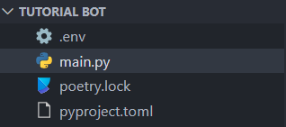
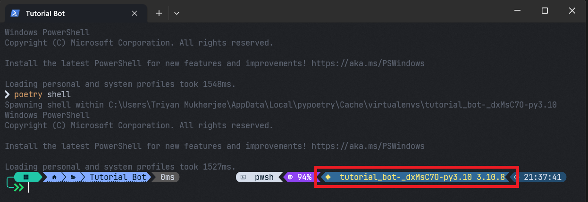
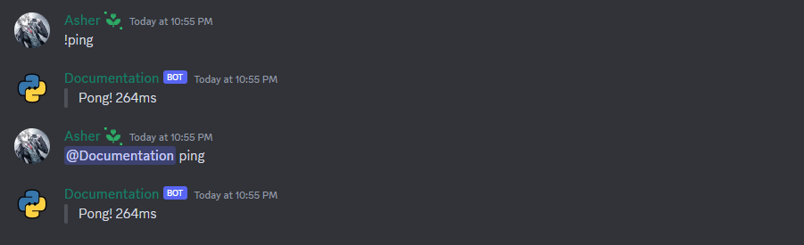
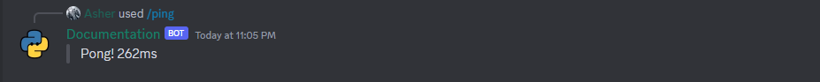
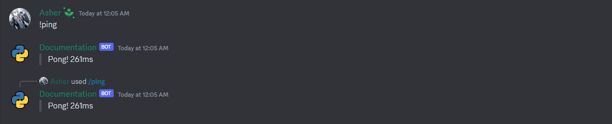

Creating a discord Bot⚓︎
Prerequisites⚓︎
- Python 3.8 or higher installed on your computer.
- A Discord bot created on the Discord Developer Portal.
- The bot token copied to your clipboard or saved somewhere safe.
- The bot added to a server.
Make sure to have the above prerequisites ready before moving on to the next section. If you don't have any of the above, please go back to the previous section and complete it.
Creating a Bot⚓︎
Now that we have the prerequisites ready, we can start creating the bot. To do this, we need to create a new folder for our bot. You can name this folder anything you want. After creating the folder, open it in your favorite code editor. I will be using Visual Studio Code for this tutorial.
After opening the folder in your code editor, we need to create a new file called main.py. This is the main file of our bot. This is where we will be writing all our code. After creating the file, we need to create a new file called .env. This is where we will be storing our bot token.
{kind=link}
{kind=link}
Warning
Please make sure to keep your bot token safe. If someone gets access to your bot token, they can do anything with your bot. If you think someone has access to your bot token, you can regenerate it on the Discord Developer Portal.
Replace your_token_here with your bot token. After adding the token, we need to install the discord.py library. To do this, open a new terminal in your code editor and run the following command:
Note
You can use Ctrl+` to open a new terminal in Visual Studio Code.
For more advanced users, it's recommended to use a virtual environment or a package manager like Poetry. A virtual environment is a tool that helps manage dependencies for different projects. This means that you can have different versions of the same package installed for different projects. This is useful when you are working on multiple projects that use different versions of the same package. It does this by creating isolated environments for each project.
{kind=link}
{kind=link}
Note
You will need to activate the virtual environment every time you open a new terminal. As an indicator, you will see (venv) in your terminal.
{kind=link}

{kind=link}

Note
You will need to run poetry shell every time you open a new terminal. As an indicator, you will see (<project-name>) in your terminal.
Writing the Code⚓︎
Before we jump into writing code we need to install one more package. This package is called python-dotenv. This package allows us to read the .env file we created earlier. To install this package, run the following command in your terminal:
Note
A .env file is a file that contains environment variables. These variables are used to store sensitive information like API keys and tokens. These variables are not shared with anyone and are only used by the developer.
Now that we have everything ready, we can start writing the code. Open the main.py file and add the following code:
Note
To run the bot, you can use the following command:
If you are using a virtual environment or Poetry, you will need to activate it first. And to stop the bot, you can use Ctrl+C.Differences between Client and Bot⚓︎
Now looking at the code, you might be wondering what the difference between Client and Bot is and when to use which. The commands.Bot class is a subclass of the discord.Client class. This means that the commands.Bot class has all the functionality of the discord.Client class and more.
The commands.Bot class is used to create a bot that can respond to commands. The discord.Client class is used to create a bot that can respond to events. For example, if you want to create a bot that responds to prefix commands with a bunch of complex commands and functionalities, it is recommended to use the commands.Bot class.
If you want to just create a minimal bot that responds to events or with just a few slash commands, you can use the discord.Client class.
In most cases, you will be using the commands.Bot class.
| Client | Bot |
|---|---|
| Capable of only responding to events and slash commands if configured. | Capable of responding to events, commands, and slash commands with out of the box support. |
| Can be used to create a minimal bot. | Can be used to create a bot with more functionality. |
| Not possible to add cogs. | Possible to add cogs. |
| Not possible to make prefix commands. | Possible to make prefix commands. |
| Only possible to have 1 callback per event. | Possible to have multiple callbacks per even using listen decorators. |
Note
A discord.Client instance allows for only 1 callback per event. This means that if you have 2 on_message callbacks, only 1 of them will be called.
@client.event
async def on_message(message: discord.Message) -> None:
print("First callback")
@client.event
async def on_message(message: discord.Message) -> None:
print("Second callback")
But if you are using an instance of commands.Bot, you can use the listen decorator to add multiple callbacks to the same event.
Warning
Don't use both the discord.Client and commands.Bot class at the same time it will cause confusion and unexpected behavior and errors.
Using Intents⚓︎
Intents are a way to tell Discord what events your bot is interested in. For example, if you want to receive messages from users, you would need to enable the discord.Intents.messages intent. If you want to receive reactions from users, you would need to enable the discord.Intents.reactions intent.
If you want to receive all events, you would need to enable all intents. This can be done by using the discord.Intents.all() intent. If you want to receive only the default events, you would need to enable the discord.Intents.default() intent. This can be done by using the discord.Intents.default() intent.
The default intents contain all intents except for the discord.Intents.members, discord.Intents.message_content and discord.Intents.presences intents. This is because these intents are privileged intents. This means that you need to enable them on the Discord Developer Portal before you can use them.
Note
Make sure to only enable the intents you need. If you enable all intents, your bot might be slower and consume more resources unnecessarily.
Using Commands and Events⚓︎
Now that we have our bot ready, we can start adding commands and events.
import os
import discord
from discord.ext import commands
from dotenv import load_dotenv
load_dotenv()
TOKEN = os.getenv("TOKEN")
bot = commands.Bot(command_prefix=commands.when_mentioned_or("!"), intents=discord.Intents.all()) # commands.when_mentioned_or("!") is used to make the bot respond to !ping and @bot ping
@bot.event
async def on_ready() -> None: # This event is called when the bot is ready
print(f"Logged in as {bot.user}")
@bot.event
async def on_message(message: discord.Message) -> None: # This event is called when a message is sent
if message.author.bot: # If the message is sent by a bot, return
return
if message.content == "Hello": # If the message content is Hello, respond with Hi
await message.channel.send("Hi")
await bot.process_commands(message) # This is required to process commands
@bot.command()
async def ping(ctx: commands.Context) -> None:
await ctx.send(f"> Pong! {round(bot.latency * 1000)}ms")
bot.run(TOKEN)
{kind=link}

Warning
If you don't call bot.process_commands(message) in the on_message event, the bot will not process commands the way it is supposed to. This means that the bot will not respond to commands.
import os
import discord
from discord.ext import commands
from dotenv import load_dotenv
load_dotenv()
TOKEN = os.getenv("TOKEN")
bot = commands.Bot(command_prefix=commands.when_mentioned_or("!"), intents=discord.Intents.all()) # commands.when_mentioned_or("!") is used to make the bot respond to !ping and @bot ping
async def setup_hook() -> None: # This function is automatically called before the bot starts
await bot.tree.sync() # This function is used to sync the slash commands with Discord it is mandatory if you want to use slash commands
bot.setup_hook = setup_hook # Not the best way to sync slash commands, but it will have to do for now. A better way is to create a command that calls the sync function.
@bot.event
async def on_ready() -> None: # This event is called when the bot is ready
print(f"Logged in as {bot.user}")
@bot.tree.command()
async def ping(inter: discord.Interaction) -> None:
await inter.response.send_message(f"> Pong! {round(bot.latency * 1000)}ms")
bot.run(TOKEN)
{kind=link}

Note
The first required argument of a slash command is always inter: discord.Interaction and all further arguments must be type hinted.
import os
import discord
from discord.ext import commands
from dotenv import load_dotenv
load_dotenv()
TOKEN = os.getenv("TOKEN")
bot = commands.Bot(command_prefix=commands.when_mentioned_or("!"), intents=discord.Intents.all()) # commands.when_mentioned_or("!") is used to make the bot respond to !ping and @bot ping
async def setup_hook() -> None: # This function is automatically called before the bot starts
await bot.tree.sync() # This function is used to sync the slash commands with Discord it is mandatory if you want to use slash commands
bot.setup_hook = setup_hook # Not the best way to sync slash commands, but it will have to do for now. A better way is to create a command that calls the sync function.
@bot.event
async def on_ready() -> None: # This event is called when the bot is ready
print(f"Logged in as {bot.user}")
@bot.hybrid_command()
async def ping(ctx: commands.Context) -> None: # This is a hybrid command, it can be used as a slash command and as a normal command
await ctx.send(f"> Pong! {round(bot.latency * 1000)}ms")
bot.run(TOKEN)
{kind=link}

Note
In hybrid commands, the first required argument must be ctx: commands.Context and all further arguments must be type hinted so as to support slash commands.
Note
If you want to use discord.Client for slash commands, the process is the same as the one for discord.ext.commands.Bot. The only difference is that you need to create a tree attribute for your client instance manually.
Documentation for discord.app_commands.CommandTree can be found here.
Making an Advanced Bot⚓︎
Now that we have a basic bot, we will apply what we learned to make an advanced bot and add more functionality to it creating a robust core for our bot.
import datetime
import logging
import os
import traceback
import typing
import aiohttp
import discord
from discord.ext import commands
from dotenv import load_dotenv
class CustomBot(commands.Bot):
client: aiohttp.ClientSession
_uptime: datetime.datetime = datetime.datetime.utcnow()
def __init__(self, prefix: str, ext_dir: str, *args: typing.Any, **kwargs: typing.Any) -> None:
intents = discord.Intents.default()
intents.members = True
intents.message_content = True
super().__init__(*args, **kwargs, command_prefix=commands.when_mentioned_or(prefix), intents=intents)
self.logger = logging.getLogger(self.__class__.__name__)
self.ext_dir = ext_dir
self.synced = False
async def _load_extensions(self) -> None:
if not os.path.isdir(self.ext_dir):
self.logger.error(f"Extension directory {self.ext_dir} does not exist.")
return
for filename in os.listdir(self.ext_dir):
if filename.endswith(".py") and not filename.startswith("_"):
try:
await self.load_extension(f"{self.ext_dir}.{filename[:-3]}")
self.logger.info(f"Loaded extension {filename[:-3]}")
except commands.ExtensionError:
self.logger.error(f"Failed to load extension {filename[:-3]}\n{traceback.format_exc()}")
async def on_error(self, event_method: str, *args: typing.Any, **kwargs: typing.Any) -> None:
self.logger.error(f"An error occurred in {event_method}.\n{traceback.format_exc()}")
async def on_ready(self) -> None:
self.logger.info(f"Logged in as {self.user} ({self.user.id})")
async def setup_hook(self) -> None:
self.client = aiohttp.ClientSession()
await self._load_extensions()
if not self.synced:
await self.tree.sync()
self.synced = not self.synced
self.logger.info("Synced command tree")
async def close(self) -> None:
await super().close()
await self.client.close()
def run(self, *args: typing.Any, **kwargs: typing.Any) -> None:
load_dotenv()
try:
super().run(str(os.getenv("TOKEN")), *args, **kwargs)
except (discord.LoginFailure, KeyboardInterrupt):
self.logger.info("Exiting...")
exit()
@property
def user(self) -> discord.ClientUser:
assert super().user, "Bot is not ready yet"
return typing.cast(discord.ClientUser, super().user)
@property
def uptime(self) -> datetime.timedelta:
return datetime.datetime.utcnow() - self._uptime
def main() -> None:
logging.basicConfig(level=logging.INFO, format="[%(asctime)s] %(levelname)s: %(message)s")
bot = CustomBot(prefix="!", ext_dir="cogs")
bot.run()
if __name__ == "__main__":
main()
This bot has a lot of new features, so let's go over them one by one. This bot template can be used for both slash commands and regular commands or hybrid commands.
-
CustomBothas aloggerattribute that is used to log messages to the console. -
CustomBothas anext_dirattribute that is used to store the path to the directory where the bot's extensions/cogs are stored and loaded from. -
CustomBothas asyncedattribute that is used to check if the bot's slash commands are synced with Discord. -
CustomBothas aclientattribute that is used to make HTTP requests. -
CustomBothas a basic error handler that logs the error to the console. -
CustomBothas anuptimeproperty that is used to get the bot's uptime.
Warning
For conducting specific actions on startup, you should use the setup_hook function. This function is called before the bot starts and is the best place to put your startup code. Please do not put your startup code in on_ready as this event is fired whenever bot connection to discord gateway is established. This means that on_ready can be called multiple times during the bot's lifetime.
Conclusion⚓︎
In this tutorial, we learned how to create a simple bot application using discord.py. We also learned how to create a more advanced bot application that can be used as a template for future projects. Going forward, we will further expand on this template and add more functionality to it.